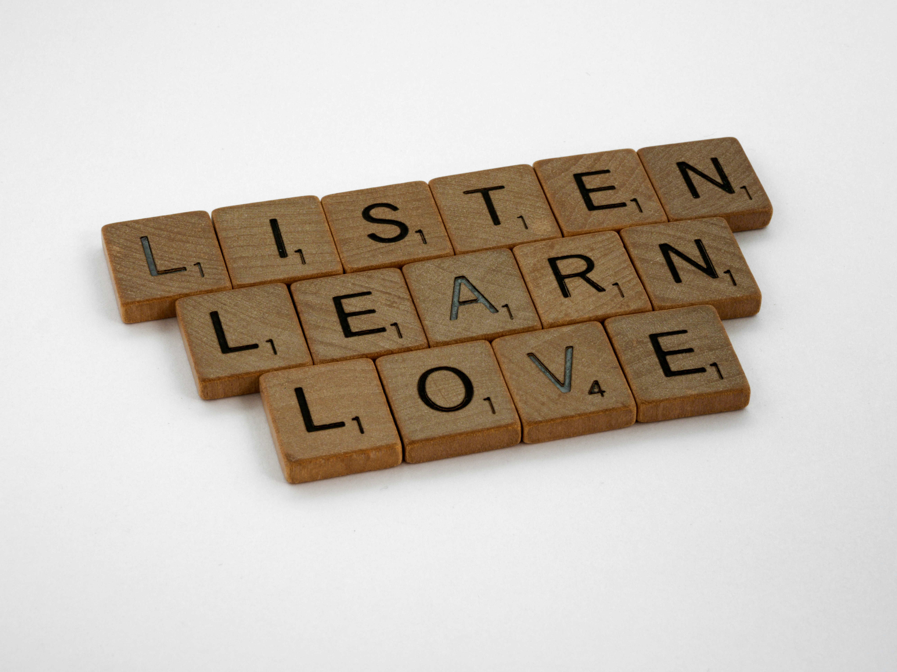
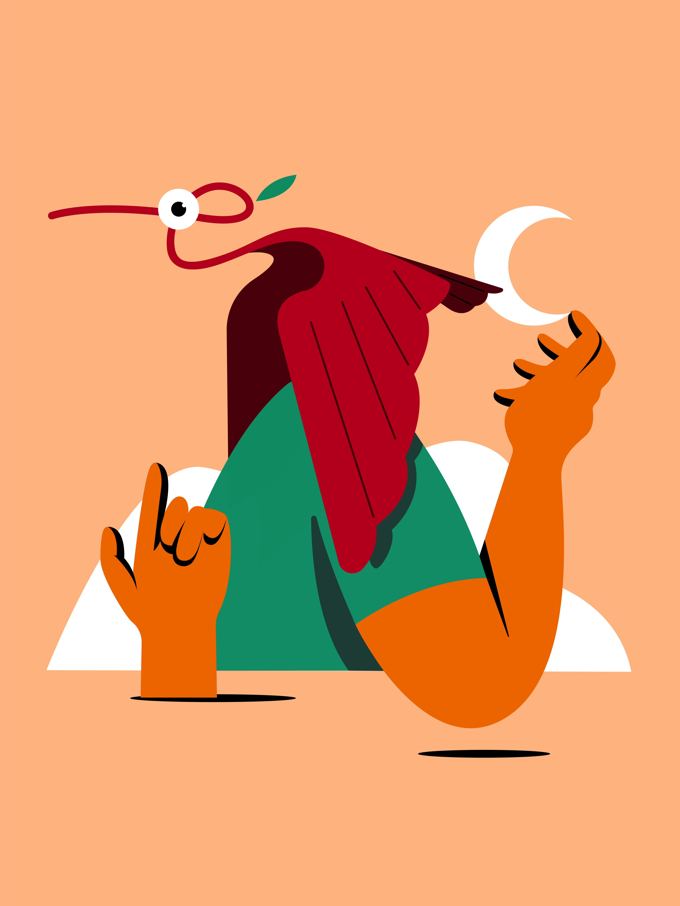
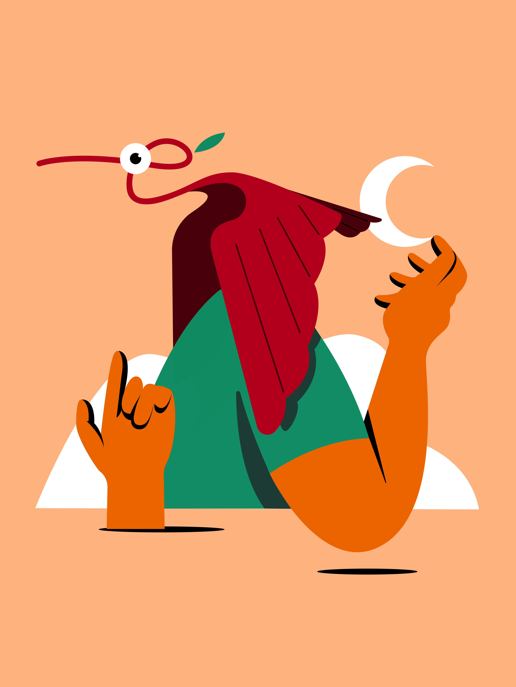

Explore Our Services
-
Talk to: Tana Ayo-Ogbor
Book a private one-on-one session with certified listener, Tana Ayo-Ogbor, to talk through whatever is weighing you down. Whether it's stress, trauma, heartbreak, or just the need to feel heard, these sessions are built to give you guidance, comfort, and clarity.
 -
Fully Anonymous & Encrypted
Sometimes, you just need to scream into the void. This feature lets you rant anonymously to a trained listener. Both parties remain anonymous, the chat is fully encrypted, and all messages are deleted once the session ends. No saving. No tracking. Just a safe place to let it out.
-
Talk to: Eduk Dorcas
This session combines dietary advice with mental wellness check-ins. Led by Eduk Dorcas or Chidera, it’s perfect for anyone feeling off-balance, struggling with eating habits, or seeking a healthier lifestyle with less pressure. You’ll get gentle, evidence-backed support for both your plate and your peace of mind.

-
Talk to: Chidera Umezurike
Academics, pressure, loneliness, identity crises, students carry more than just books. This session is tailored for students navigating emotional overwhelm, burnout, and self-worth. Eduk Dorcas or Chidera are here to help you breathe, regroup, and feel a little less alone.

 
